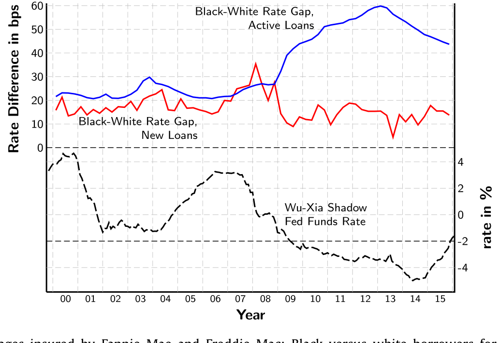
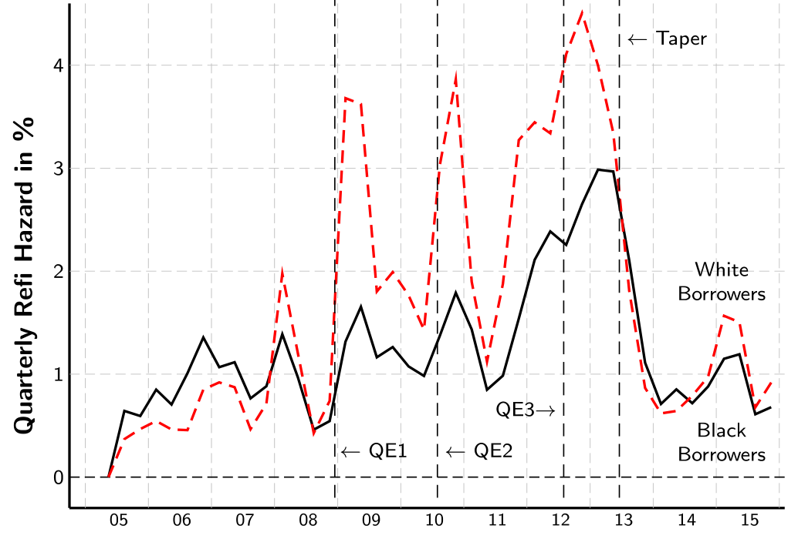
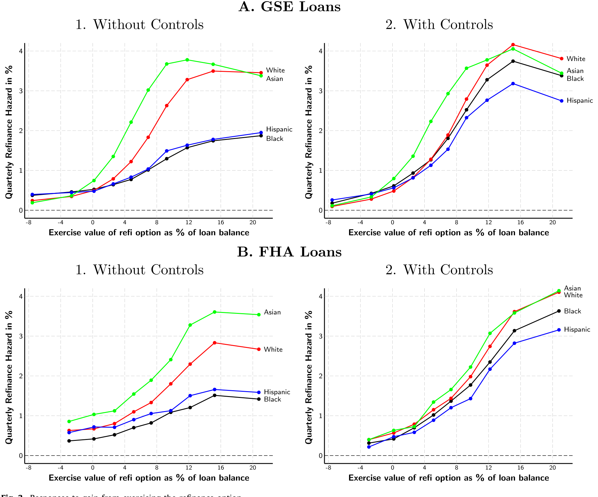
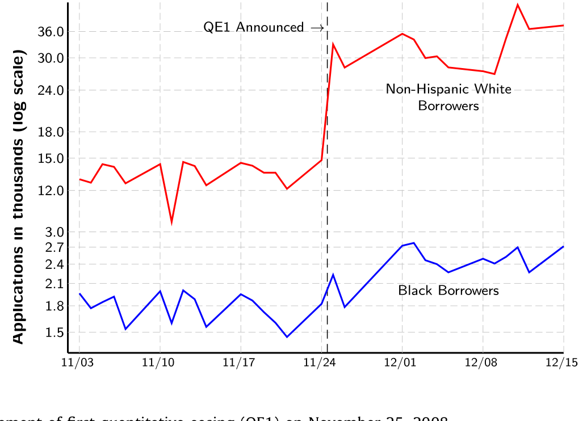
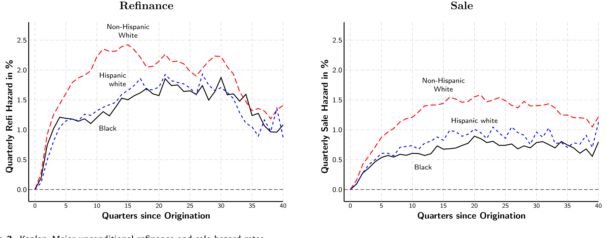
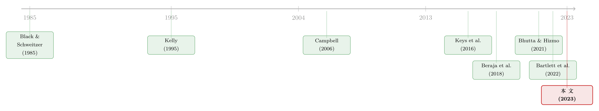

利率往下走的时候，是谁先按下了「再融资」键
本文读的是 Gerardi, Willen & Zhang (2023, Journal of Financial Economics)：黑人和西班牙裔房主长期支付比白人更高的房贷利率，但真正的「元凶」不在放贷那一刻的定价，而在此后漫长的还款岁月里——当利率下行时，白人借款人远比少数族裔更愿意、也更有能力去 再融资 (refinance)。于是，每一次扩张性货币政策都在悄悄地、却系统性地扩大房贷利率的种族差距。
1 一个看似简单、却被问错了的问题
先讲一个数字。2012 年底，在 房利美 (Fannie Mae) 和 房地美 (Freddie Mac)（合称 GSE）担保的房贷里，黑人借款人支付的利率，比白人借款人平均高出约 60 个基点。
这不是新鲜事。把时间轴拉长，这道利率鸿沟时宽时窄，但它始终在那里。问题是：它从何而来？
最自然、也最容易脱口而出的解释只有一个词——歧视。放贷机构在发放贷款的那一刻，就给黑人借款人开了更高的价：要么是赤裸裸的种族偏见，要么是因为黑人借款人的贷款「天生」带着更高的违约特征，比如更高的杠杆、更低的信用分。
这个故事听上去无懈可击。它也意味着一个清晰的政策含义：只要管住「放贷那一刻」的定价，鸿沟就会收窄。
但本文的三位作者——来自亚特兰大联储、波士顿联储和莱斯大学的 Gerardi、Willen 和 Zhang——做了一个极其朴素的检验，结果却让整个故事开始松动。

Figure 1: Rates on outstanding mortgages insured by Fannie Mae and Freddie Mac: Black versus white borrowers for mortgages originated from 20 0 0 to
他们的思路是这样的：假设我们强行抹平发放时的所有定价差异，让「同一天拿到房贷的人，无论种族、信用分、贷款价值比 (loan-to-value, LTV) 如何，一律拿到当季全国代表性的指数利率」。比如 2006 年第二季度拿到 30 年期固定利率房贷 (fixed-rate mortgage, FRM) 的人，统统按 6.6% 计息。这样一来，图 1 里那道鸿沟会缩小多少？
答案是：缩小了，但只缩小了大约 15%。
换句话说，哪怕你彻底消灭了发放时刻的全部利率差异，今天黑人和白人之间的房贷利率不平等，也几乎纹丝不动。
于是，一个自然的问题是：如果不平等不在「起点」，那它藏在哪里？
2 真正的分水岭：不是定价，而是再融资
本文的核心，可以用一句话概括：理解持续的利率鸿沟，钥匙在再融资。
道理其实不难。美国的房贷绝大多数是可提前偿还的 30 年固定利率合约。利率一旦下行，借款人手里就握着一个有价值的期权——去 再融资，把旧的高利率贷款换成新的低利率贷款；或者干脆卖房搬家，顺带换一笔便宜的新贷款。过去四十年里，房贷利率是一路趋势下行的。这意味着，谁更频繁、更及时地行使这个期权，谁就能把自己的实际利率「磨」得更低。
接着，作者把数据摆出来。在 GSE 样本里，黑人借款人因再融资而提前还款的季度风险率 (quarterly hazard of prepayment due to refinance)，比白人低了 0.75 个百分点。这是什么概念？全样本所有借款人的平均季度再融资概率是 1.71 个百分点——也就是说，这 0.75 个百分点的差距，相当于平均水平的约 44%。
但真正关键的一步在于：差距不是恒定的，而是随着利率环境「呼吸」的。
看 2006、2007 年。当时 Freddie Mac 的 30 年期 FRM 调查利率 (PMMS) 平均在 6% 以上，是 2001 年以来的高位——再融资无利可图，于是黑人和白人的再融资速度大致相当。
再看 2009、2010 年。PMMS 利率跌到历史低位，不足 5%——再融资的诱惑前所未有地大。结果呢？白人借款人的再融资概率几乎是黑人的两倍。

Figure 4: Unconditional quarterly refinance hazards for Black and white borrowers
如图 4 所示，每当利率大幅下行、再融资期权价值最高的时候，黑人与白人之间未经条件化的季度再融资缺口能高达 1.75%。换句话说，越是「天上掉馅饼」的时候，少数族裔越接不住。 这就是全文反复敲打的那个核心。
3 这道缺口，有多少能被「观测变量」解释？
到这里，怀疑的人会立刻反问：黑人借款人本来信用分就低、收入就低、杠杆就高，他们再融资少，难道不是天经地义吗？这跟种族有什么关系？
作者很诚实地正面回答了这个问题，而答案是分层次的。
首先，确实，大部分缺口能被可观测差异解释。在 GSE 样本里，白人借款人的平均信用分是 752，而黑人是 715、西班牙裔是 730；白人家庭收入 $98.6K，黑人 $81.6K、西班牙裔 $79.1K。此外，黑人借款人更可能是女性（47.8% vs 白人 28.4%）、更不可能有共同借款人（27.8% vs 白人 53.1%）。这些因素，无论放在哪个种族身上，都会压低再融资倾向。把它们加进来，大约能解释再融资缺口的 80%。
但接着，一个不肯散去的小尾巴出现了。即便控制住信用分、收入、性别、发放年份季度，再加上极其精细的地理固定效应（细到 ZIP 邮编），缺口也没有归零。作者给出一个干净的对照：取住在同一个邮编、同样信用分、同样收入、同样性别、同一年同一季度拿到贷款的两个人，如果一个是黑人、一个是白人，那么黑人再融资的概率仍然要低 0.15 个百分点。
这 0.15 个百分点很小，但它顽固地存在。作者没有把它简单地归因于「歧视」——它可能来自金融素养、信任、信息渠道、家庭网络等一系列难以观测的因素。本文的贡献不在于钉死这个残差的成因，而在于先把「定价歧视」这个最流行的解释请下神坛。
4 宏观，还是特质？把再融资的「触发器」拆开
如果说前面是把缺口「分解到种族」，那么本文最精巧的一笔，是把再融资的触发原因拆成两类，再看种族差异藏在哪一类里。
再融资的机会来自两种力量：
- 宏观的 (macroeconomic)：所有新房贷的利率，自你买房或上次再融资以来整体下行了。这是「全市场一起降息」的馅饼。
- 特质的 (idiosyncratic)：与你个人信用状况改善相关的利率下降——房价上涨让你的杠杆变低，或者收入和就业稳定让你的信用分上升。哪怕整体利率不动，你也能因此拿到更低的利率。
然后，反转出现了。作者发现，驱动再融资种族差异的，主要是宏观那一类。当利率全线大跌时，黑人和白人之间的缺口张到最大；可一旦换成特质性的触发器——比如个人信用分上升——黑人和西班牙裔借款人的反应，与白人在统计上没有显著差异。

Figure 3: Responses to gain from exercising the refinance option
这是个很有意思的现象。它说明少数族裔借款人并非「对自身处境的改善无动于衷」，而是对「全市场降息」这种需要主动捕捉、需要算账、需要跨过一道道再融资门槛的机会，反应迟钝。也正因如此，问题才会和货币政策死死地绑在一起。
5 于是，货币政策成了一架「不平等放大器」
把前面的逻辑串起来，本文最有冲击力的论断就呼之欲出了：扩张性货币政策，会通过再融资这个渠道，不成比例地让白人借款人受益，从而加剧房贷利率的种族不平等。
美联储真正开始直接瞄准房贷市场，是从 2008 年第一轮 量化宽松 (quantitative easing, QE1) 开始的——大规模购买抵押贷款支持证券 (mortgage-backed securities, MBS)。2008 年 11 月 25 日 QE1 的宣布，给作者提供了一个近乎完美的事件研究 (event study) 实验室。
他们比较宣布前六个月与宣布后六个月：白人借款人的季度再融资概率上升了 3.2 个百分点，而黑人借款人只上升了 1 个百分点。传导到存量房贷利率上，白人平均利率下降了 21 个基点，黑人只下降了 9 个基点。

Figure 5: Event study of the announcement of first quantitative easing (QE1) on November 25, 2008
同一剂「猛药」，疗效却分了三六九等。这正是货币政策「分配效应 (distributional effects)」近年来被央行和批评者反复讨论的那根神经——本文给出的，是一个种族维度上格外刺眼的证据。（关于货币政策在房贷市场里如何因人而异地传导，也可参见《加息真正掐断的，是那条「过线」的房贷》。）
6 这笔账，到底有多大？
光有风险率和基点还不够直观。作者最后做了一个反事实模拟 (counterfactual simulation)：保持其他一切不变，只把少数族裔借款人的再融资行为，替换成白人的再融资行为，看看他们的还款路径会怎样改变。
聚焦那些在 QE1 之前就买了房的借款人，到 2015 年第四季度：黑人借款人每年的利息支出会少 $588，西班牙裔会少 $713。把整个 GSE 房贷市场加总，仅因再融资行为的差异，截至 2015Q4，黑人和西班牙裔借款人每年多付了 $812 million（约 8.12 亿美元）的额外利息。
而这一切的根子，在于「从不再融资」的人群占比差异。作者发现，如果把黑人的再融资行为换成白人的，2008 年后从未再融资过的借款人比例，会从将近一半，降到不足三分之一。
这里藏着本文一个被反复强调的方法论区分：广延边际 (extensive margin) 与 集约边际 (intensive margin)。集约边际指的是「条件于你决定再融资之后，你拿到的利率」；广延边际指的是「你到底有没有去再融资」。本文发现，集约边际对利率差距的贡献很小——也就是说，一旦黑人借款人决定再融资，他拿到的新利率并不会比白人差太多。真正撑起整个鸿沟的，是广延边际：要不要按下那个键。
这也呼应了 Bhutta and Hizmo (2021) 在 FHA 贷款里的发现：少数族裔在发放时更高的平均利率，很大程度上能被他们较少选择「预付点数 (points)」来换取低利率的选择解释；而 Bartlett et al. (2022) 与 Willen and Zhang (2022) 在常规贷款里发现，控制点数后，黑人和西班牙裔只比相似白人高 2 到 8 个基点。换言之，发放时刻（集约边际）那一点点差距，远不是今天鸿沟的主角。
7 数据：把「卖房」和「再融资」第一次分开
要讲清楚这个故事，作者必须解决一个长期困扰文献的技术难题：大多数贷款数据根本分不清一笔提前还款，到底是因为卖房搬家，还是因为再融资留在原房。
他们用的是一个三方匹配的新数据集 HMDA-McDash-CRISM：
- HMDA（住房抵押贷款披露法案数据）——提供种族、族裔、收入等发放时信息，覆盖约
90%的美国房贷发放； - McDash（Black Knight 的贷款服务数据）——提供信用分、LTV、利率、期限、逐月还款表现，覆盖
60%–80%的市场； - CRISM（McDash 与 Equifax 征信数据的匹配）——关键在于，它提供贷款终止前后六个月的征信信息。
正是 CRISM 这段「终止后」的征信记录，让作者能够判断：如果借款人地址没变、且在还款前后看到一笔新的首套房贷发放，就归为再融资；如果地址在六个月窗口内变了，就归为卖房搬家。这套识别方法来自 Lambie-Hanson and Reid (2018)。
样本是 2005–2015 年发放、表现追踪至 2020 年 6 月的 30 年期全摊销 FRM，分 GSE 与 FHA 两组，取 7.5% 的随机样本以减轻计算负担。GSE 样本里季度再融资率 1.71%、卖房率 0.96%、违约率 0.35%；FHA 的违约率 (0.89%) 是 GSE 的两倍多，因为 FHA 服务的本就是信用分更低、首付更少的群体（FHA 的 LTV 平均 93.6%，远高于 GSE 的 72.6%）。

Figure 2: Kaplan–Meier unconditional refinance and sale hazard rates
8 文献脉络
把这篇论文放回它所在的研究河流里，能更清楚地看出它的位置。
最早一支，是种族与提前还款的文献。Kelly (1995)、Clapp et al. (2001)、Deng and Gabriel (2006)、Firestone et al. (2007)，直到 Kau et al. (2019)，都记录了少数族裔借款人提前还款更慢这一事实。但它们有一个共同的硬伤：分不清提前还款是卖房还是再融资，而且样本往往局限于某个小地区、短时段或单一银行。本文用 CRISM 把这两者第一次干净地切开，正是站在它们肩上的关键一跃。
另一支，是发放时刻的利率歧视研究：从 Black and Schweitzer (1985)，到 Boehm et al. (2006)、Bocian et al. (2008)、Ghent et al. (2014)、Cheng et al. (2015)，再到近年的 Bartlett et al. (2022)、Bhutta and Hizmo (2021)、Willen and Zhang (2022)。这一支盯的是「起点」。本文的贡献，是论证了今天的不平等，主角早已从「起点」转移到了「再融资行为的时机差异」上。
第三支，是货币政策在房贷市场的异质性传导：合约类型（Calza et al., 2013; Di Maggio et al., 2017）、房价增长（Beraja et al., 2018）、租房还是买房（Cloyne et al., 2019）、借款人年龄（Wong, 2019）、收入（Agarwal et al., 2021）、放贷集中度（Scharfstein and Sunderam, 2017）——都被证明会带来差异化的传导。本文补上的，是种族这条线。
最后一支，是借款人为何「次优地」行使提前还款期权：Keys et al. (2016) 发现约 20% 财务上无约束的家庭该再融资时却不再融资；Johnson et al. (2018) 发现即便零成本、月供大降，超过 50% 的人也会拖延；Agarwal et al. (2017) 看到沉没成本谬误；Andersen et al. (2020) 在丹麦把惰性拆成时间依赖与状态依赖，并发现再融资行为在人口学维度上高度异质。本文把这种「行为惰性」与种族不平等焊接在了一起。

9 评论与延伸（Q&A + 研究方向）
(a) 几个可能的疑问
Q：既然 80% 的缺口能被可观测变量解释，那本文是不是在说「这主要不是歧视问题」？
某种程度上是的，但要小心措辞。本文的精确主张是：今天的利率鸿沟，主因不是「发放时刻的定价歧视」，而是「事后再融资行为的差异」，且这种差异大部分（约 80%）来自信用分、收入、杠杆等可观测特征。剩下那约 0.15 个百分点的残差，本文没有断言是歧视——它可能是金融素养、信任、信息可得性等，作者保持了克制。
Q：广延边际和集约边际的区分，为什么这么重要？
因为它直接决定政策该往哪儿使劲。如果鸿沟主要在集约边际（再融资时拿到的利率更差），矛头该指向放贷端的定价与撮合；但本文发现集约边际贡献很小，鸿沟几乎全在广延边际（要不要去再融资）。这意味着，降低再融资的摩擦、提高触达率，可能比盯着「同一笔再融资的报价公不公平」更有用。
Q：QE1 事件研究的「3.2 vs 1 个百分点」，能不能就当成因果？
比纯横截面回归可信，但不能照单全收。事件研究比较的是 QE1 宣布前后六个月的再融资概率变化，识别力来自一个外生的政策冲击。隐患在于：同期可能有别的宏观因素（房价、就业、信贷标准收紧）在不同种族群体上差异化地演变，且 2008 年底正值危机最深处，黑人社区受房价崩盘冲击更重，本身就压低了他们的可再融资资格（净值不足）。所以这个差距里，混着「行为差异」和「资格差异」两股力量。
Q：那「资格不足」（净值、信用分被危机打掉）会不会才是真凶？
这是最该认真对待的替代解释。本文用精细控制和「特质性触发器下无显著差异」的结果来回应：当个人信用分改善时，少数族裔的反应与白人无异，说明问题不全是「资格」，也有「对全市场降息这种机会的捕捉能力」。但危机期净值塌陷导致的再融资资格差异，仍可能被低估，这是识别上最大的灰色地带。
Q：本文只看 30 年期 FRM 的 GSE/FHA 贷款，结论能外推吗？
要打折扣。样本刻意限定在同质的 30 年固定利率、政府担保贷款，正是为了排除合约异质性。但这也意味着结论对次级贷款、可调利率贷款 (ARM)、非 QM 贷款不一定成立。事实上作者在附录里指出，在带有提前还款罚金的样本里，种族间的再融资差异几乎消失——这恰恰反证了「可自由提前偿还的 FRM」这一合约设计本身，是放大不平等的制度土壤。
Q：本文对政策开了什么药方？
两类。一是降低少数族裔的再融资门槛（race-neutral 的政策可能就有效，因为 80% 是可观测因素）；二是改造合约设计——推广 ARM、带提前还款罚金的 FRM（Mayer et al. 论证罚金能压低发放利率），或开发「棘轮 (ratchet) 房贷」这类只降不升、自动调整的产品，让借款人不必主动按键也能享受降息红利。
(b) 几个可能的研究问题与提案
1. 公司债市场里的「再融资种族/规模鸿沟」
【经济故事】把本文的逻辑搬到公司端：当利率下行、信用利差收窄时，是不是大型、评级高的发行人远比中小、低评级发行人更迅速地发新债赎旧债，从而不成比例地享受了宽松货币政策？这等价于把「广延边际」从家庭挪到企业。
【可行性】中。数据上可用 Mergent FISD（债券发行与赎回）+ TRACE（成交）+ Compustat，识别可借 QE 公告做事件研究。难点在于公司再融资的决策更内生（受投资机会驱动），需要更强的工具或断点。
2. 外资持有人是否「更会」捕捉再融资/再投资机会？
【经济故事】在 MBS 与公司债市场，不同类型持有人（外资 vs 本土、被动 vs 主动）对央行购债与利率下行的反应速度可能系统性不同。本文揭示的「同一剂货币政策，受益者不均」的逻辑，在持有人结构维度上同样可能成立。
【可行性】中。可用 TIC 数据、eMAXX/Lipper 的债券持有明细，结合 QE 事件窗。识别外资是否「反应更慢/更快」需控制其投资授权与久期约束，诚实地说，把行为差异与制度约束分开并不容易。
3. 再融资摩擦的「流动性」镜像：谁在利率下行时被迫不动
【经济故事】本文聚焦种族，但更底层的机制是「再融资期权的可行使性」。可进一步问：在房贷与公司债里，哪些借款人/发行人因抵押品估值不确定、净值不足而被「锁」在高息合约里？这与房贷利率锁定 (rate lock) 是一枚硬币的两面。（可对照《被自己 3% 的房贷「锁」在原地》与《房子越「难定价」，越借不到钱》。）
【可行性】高。CRISM/McDash 类数据 + 房价指数可构造逐月净值，识别「净值跨过再融资门槛」的断点，做模糊 RDD。数据可得，识别相对干净。
4. 「棘轮房贷」反事实福利评估
【经济故事】本文提出只降不升的 ratchet 合约能更公平地分配货币政策红利，但这只是定性建议。可用结构模型量化：若全市场改用 ratchet 合约，种族间利息差距能缩小多少？发放利率会被推高多少作为代价？
【可行性】中偏低。需要一个含提前还款期权与异质借款人的结构模型，校准到本文的风险率。建模工作量大，且 ratchet 合约无真实数据可验证，属于「反事实政策实验」，结论的说服力高度依赖建模假设。
（关于再融资里隐藏的跨群体补贴，本文的「广延边际」视角也与《谁在替谁还房贷？》以及《买不起的，其实不是房子，而是机会》形成对话。）
10 我的判断
这篇论文最大的贡献，是问对了问题，并用对的数据回答了它。它把一个被「定价歧视」叙事垄断了几十年的话题，干净利落地重新定位：今天房贷利率的种族鸿沟，主战场不在放贷柜台，而在此后十几年里，谁更频繁地按下「再融资」那个键。HMDA-McDash-CRISM 三方匹配把卖房和再融资第一次分开，是让这个论断成立的技术基石；而把货币政策接进来、用 QE1 做事件研究，则把一个家庭金融问题，升格成了关乎央行分配责任的宏观命题。21 对 9 个基点，$812 million 的年度账单，这些数字会被记住。
我对识别最大的保留，集中在第 5 节的 QE1 事件研究。2008 年底是危机最深的时点，黑人社区的房价与就业受冲击更重，这会同时压低他们的再融资资格（净值塌陷、信用分受损）和再融资意愿。本文用「特质性触发器下种族差异不显著」来论证问题不全在资格，这很有说服力，但「行为差异」与「资格差异」在 2009–2010 这个特殊窗口里恐怕没有被完全剥离开。那约 0.15 个百分点的顽固残差，究竟是金融素养、信任、信息渠道，还是某种更接近歧视的东西，本文（明智地）没有下结论——但这正是最该被后续研究钉死的地方。
接下来我最想看到的，是两件事。其一，把这套「广延边际」框架做成可干预的田野实验：给随机抽取的少数族裔借款人提供再融资提醒、代办或费用补贴，直接量出广延边际的因果弹性——这比再多的观测回归都更有说服力。其二，把视角推向合约设计的反事实：在一个真正的结构模型里，回答「ratchet 房贷或 ARM 能否在不抬高发放利率的前提下，抹平货币政策的种族红利差」。本文已经把问题铺到了这一步，剩下的，是给它一个可验证的答案。
参考文献
- Andersen, S., Campbell, J.Y., Nielsen, K.M., Ramadorai, T. (2020). Sources of inaction in household finance: evidence from the Danish mortgage market. American Economic Review 110(10), 3184–3230.
- Agarwal, S., Ben-David, I., Yao, V. (2017). Systematic mistakes in the mortgage market and lack of financial sophistication. Journal of Financial Economics 123(1), 42–58.
- Bartlett, R., Morse, A., Stanton, R., Wallace, N. (2022). Consumer-lending discrimination in the FinTech era. Journal of Financial Economics 143(1), 30–56.
- Beraja, M., Fuster, A., Hurst, E., Vavra, J. (2018). Regional heterogeneity and the refinancing channel of monetary policy. Quarterly Journal of Economics 134(1), 109–183.
- Bhutta, N., Hizmo, A. (2021). Do minorities pay more for mortgages? Review of Financial Studies 34(2), 763–789.
- Black, H.A., Schweitzer, R.L. (1985). A canonical analysis of mortgage lending terms: testing for lending discrimination at a commercial bank. Urban Studies 22(1), 13–19.
- Boehm, T.P., Thistle, P.D., Schlottmann, A. (2006). Rates and race: an analysis of racial disparities in mortgage rates. Housing Policy Debate 17(1), 109–149.
- Campbell, J.Y. (2006). Household finance. Journal of Finance 61(4), 1553–1604.
- Gerardi, K., Willen, P.S., Zhang, D.H. (2023). Mortgage prepayment, race, and monetary policy. Journal of Financial Economics 147(2), 498–524.
- Kau, J.B., Fang, L., Munneke, H.J. (2019). An unintended consequence of mortgage financing regulation—a racial disparity. Journal of Real Estate Finance and Economics 59(4), 549–588.
- Keys, B.J., Johnson, E.J., Meier, S., Toubia, O. — 见 Johnson, E.J., Meier, S., Toubia, O. (2018). What's the catch? Suspicion of bank motives and sluggish refinancing. Review of Financial Studies 32(2), 467–495.
- Willen, P.S., Zhang, D.H. (2022). Do lenders still discriminate? A robust approach for assessing differences in menus. Working paper.